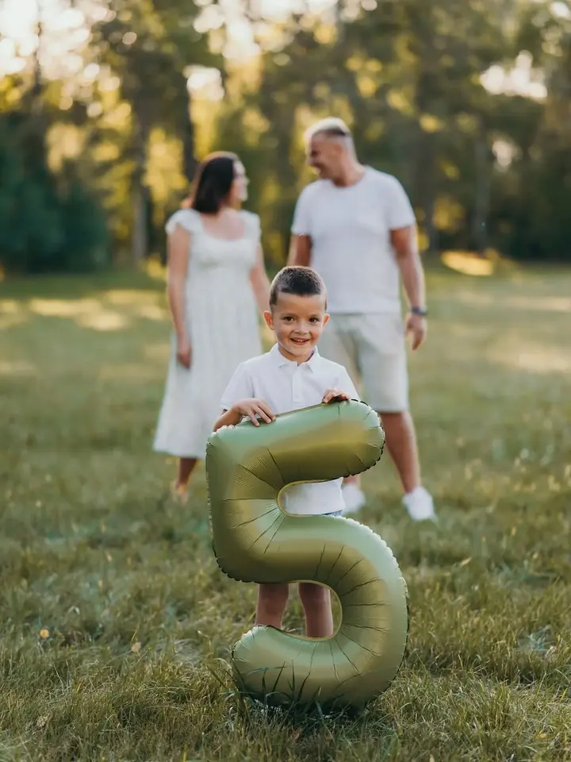
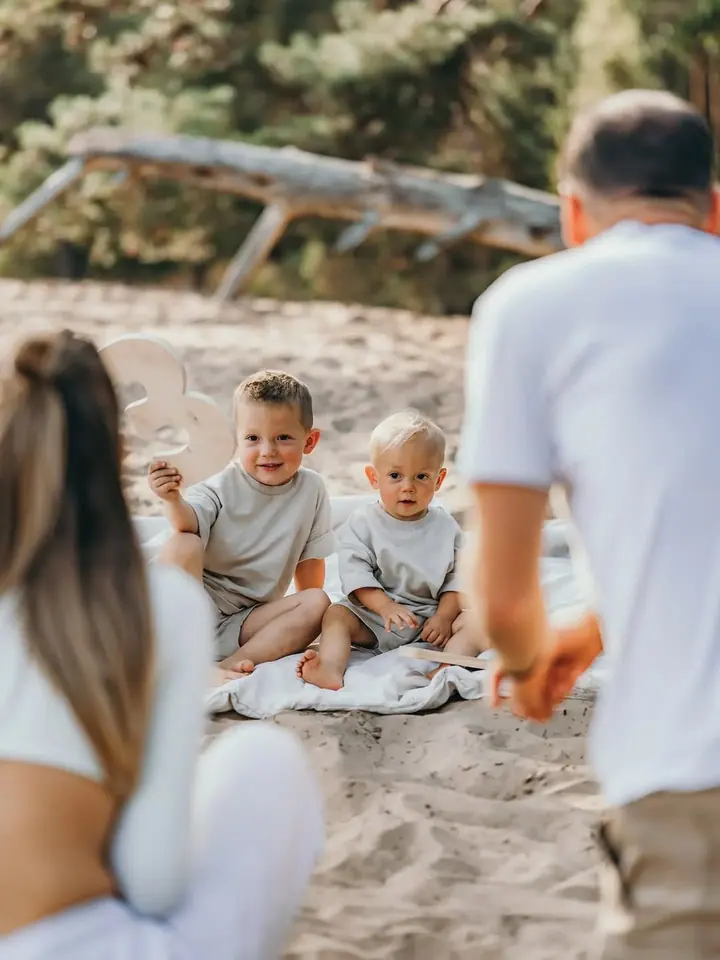

Rodiny a děti
Focení venku v přírodě nebo v mém ateliéru v Třebestovicích. Sama jsem máma dvou dětí, takže vím, jak náročné je focení s dětmi. Nebojte, spolu to zvládneme.

Jmenuji se Lenka Švandová a jsem rodinná a svatební fotografka z Třebestovic u Nymburka, kde mám doma i svůj menší ateliér. Fotím na Nymbursku, Poděbradsku, v Praze i na…
Rezervovat termínJmenuji se Lenka a bydlím v Třebestovicích u Nymburka, kde mám i svůj menší ateliér. Vystudovala jsem obchodní akademii v Kolíně, ale to mě nenaplňovalo. Protože miluju cestování a poznávání nových zemí, odjela jsem po škole do Skotska a žila tam tři roky. Ta příroda byla neskutečná.

Po návratu do Česka jsem si konečně začala plnit svůj dlouholetý fotosen. Naplno jsem začala fotit v roce 2019 a svatby jsem milovala vždycky. Když se mi v roce 2020 naskytla příležitost jednu vyfotit, neváhala jsem a šla do toho. Od té doby jsem nejen rodinná, ale i svatební fotografka.
Během let focení jsem se stala dvojnásobnou mámou a pochopila jsem, jak náročné je pro Vás focení s dětmi. Nebojte, spolu to zvládneme. Budu se těšit, až Vás poznám.
Co fotím
Focení venku v přírodě nebo v mém ateliéru v Třebestovicích. Sama jsem máma dvou dětí, takže vím, jak náročné je focení s dětmi. Nebojte, spolu to zvládneme.
Fotím obřad, půl den nebo celý den a předsvatební focení je u půldenního i celodenního balíčku v ceně. K balíčku si můžete přikoupit i krátké video na výšku pro sociální sítě.
Přirozené focení miminka s rodiči a sourozenci, u mě v ateliéru, u Vás doma nebo venku. Fotím nejpozději do dvou měsíců věku miminka.
Klidné focení pro budoucí rodiče nebo pro dva, kteří chtějí mít hezké společné fotky. Fotíme venku nebo v ateliéru v Třebestovicích.
Postup
Napište mi přes formulář, jaké focení a jaký balíček Vás zajímá, kdy a kde by mělo probíhat. Ozvu se Vám nejpozději do druhého dne.
Společně doladíme termín, místo a oblečení. Fotit můžeme venku, u Vás doma nebo v mém ateliéru v Třebestovicích, u svatby se nejdřív potkáme na předsvatebním focení.
V klidu a bez stresu. U dětí se přizpůsobím jejich tempu, u newborn focení nejdřív fotím miminko s rodiči a sourozenci a pak samostatně.
Z galerie si vyberete fotky podle sebe a já je pro Vás upravím. Rodinné focení dodávám do dvou týdnů, u svatby posílám pár fotek do týdne a ostatní do dvou měsíců přes Úschovnu.
Otázky
Fotím venku v přírodě, u Vás doma nebo v mém menším ateliéru v Třebestovicích u Nymburka. U rodinného focení je doprava do 30 km zdarma, u svateb do 50 km, jinak účtuji 10 Kč za km tam i zpět.
Ideálně už v těhotenství, nejpozději však v porodnici. Miminko fotím nejpozději do dvou měsíců jeho věku.
Doporučuji jednobarevné oblečení bez nápisů a velkých potisků, u newborn focení světlé a krémové tóny. Loga z oblečení neodstraňuji a tělesné proporce neupravuji.
Ne, neupravené fotografie neposkytuji a upravené fotky prosím dál neupravujte. Každý fotograf má svůj styl, ten můj najdete v portfoliu.
Ano, ke svatebnímu balíčku si můžete přikoupit krátké video na výšku, točené na telefon. Dostanete reel bez hudby a všechna nesestříhaná videa.